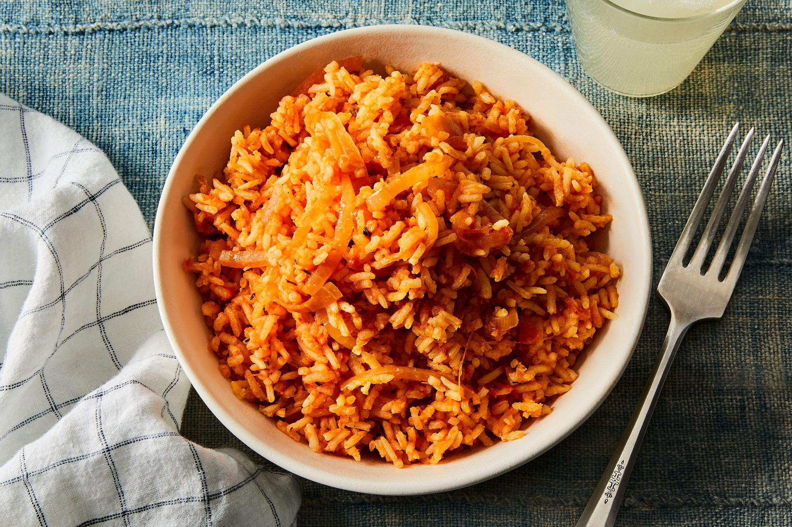

Jollof Rice Recipe

Description
This is a dish with variations across West Africa, but this recipe will focus specifically
on the variant of the dish found in Nigeria, the most populous country not only in West Africa
but the entire continent. This is a dish which has been enjoyed by families across countless
generations, and in this recipe guide we'll show you how to bring that same joy to yours too.
Ingredients
Chicken
- 2 pounds chicken drumsticks
- ½ large onion, diced
- 1 (2 inch) piece fresh ginger root, peeled and thinly sliced
- 2 cubes chicken bouillon, crushed
- 2 cloves garlic, diced
- 1 tablespoon curry powder, or more to taste
- 1 teaspoons herbes de Provence
- freshly ground black pepper
- 1 pinch cayenne pepper
- 1 cups water
Rice
- 3 tablespoons vegetable oil
- ½ large onion, diced
- 1 (14 ounce) can tomato sauce
- 1 (14 ounce) can coconut milk
- 1 teaspoons herbes de Provence
- 1 teaspoons salt, or to taste
- ½ teaspoon ground black pepper, or to taste
- 3 cups parboiled rice (such as Uncle Ben's®)
- 1 (10 ounce) package frozen mixed vegetables (carrots, corn, peas)
Plantain
- 4 ripe plantains, peeled and cut diagonally into 1/2-inch slices
- ½ cup canola oil for frying
Steps
- Place chicken drumsticks in a large Dutch oven over medium heat.
- Add 1/2 onion, ginger,
crushed bouillon cubes, garlic, curry powder, 1 teaspoon herbes de Provence, black pepper,
and cayenne pepper. Mix well.
- Cook until chicken starts sticking to the bottom, about 5
minutes.
- Pour in water, mix, cover the pot, and bring to a gentle simmer; cook for 15
minutes.
- Remove from heat.
- Transfer chicken to a baking dish using a slotted spoon. Strain cooking liquid through a
fine-mesh sieve.
- Reserve 1 1/2 cups liquid. Discard solids.
- Preheat oven to 400 degrees F (200 degrees C).
- Bake chicken in the preheated oven until no longer pink in the middle and the juices run
clear, about 30 minutes.
- An instant-read thermometer inserted into the thickest part
should read 165 degrees F (74 degrees C).
- Heat 3 tablespoons vegetable oil in a large pot over medium-low heat and cook 1/2 onion
until soft and translucent but not browned, about 5 minutes.
- Add tomato sauce; cook and
stir until slightly thickened and infused into the oil, 5 to 7 minutes.
- Stir reserved chicken broth, coconut milk, 1 teaspoon herbes de Provence, salt, and
pepper into the pot.
- Bring to a simmer; add rice. Cook, stirring often, until rice is
almost tender, 15 to 20 minutes.
- Add frozen vegetables and continue cooking until rice
is tender and creamy, about 5 minutes.
- Heat 1/2 cup of canola oil in a nonstick pan over medium heat.
- Add plantains and fry on both sides until golden and crispy, about 2 to 3 minutes
per side.
- Drain on paper towels. Garnish jollof rice with friend plantains and serve with
chicken.